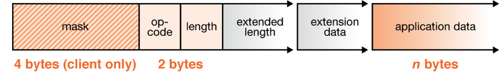
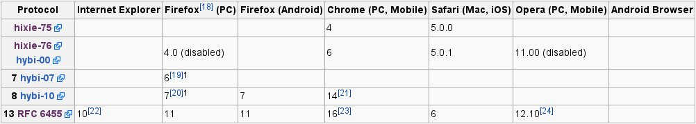
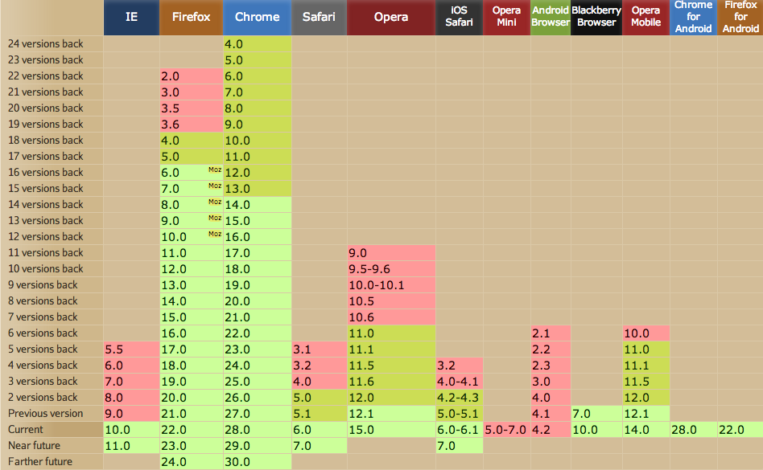
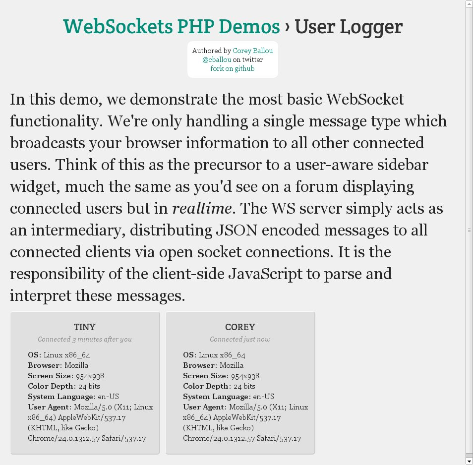
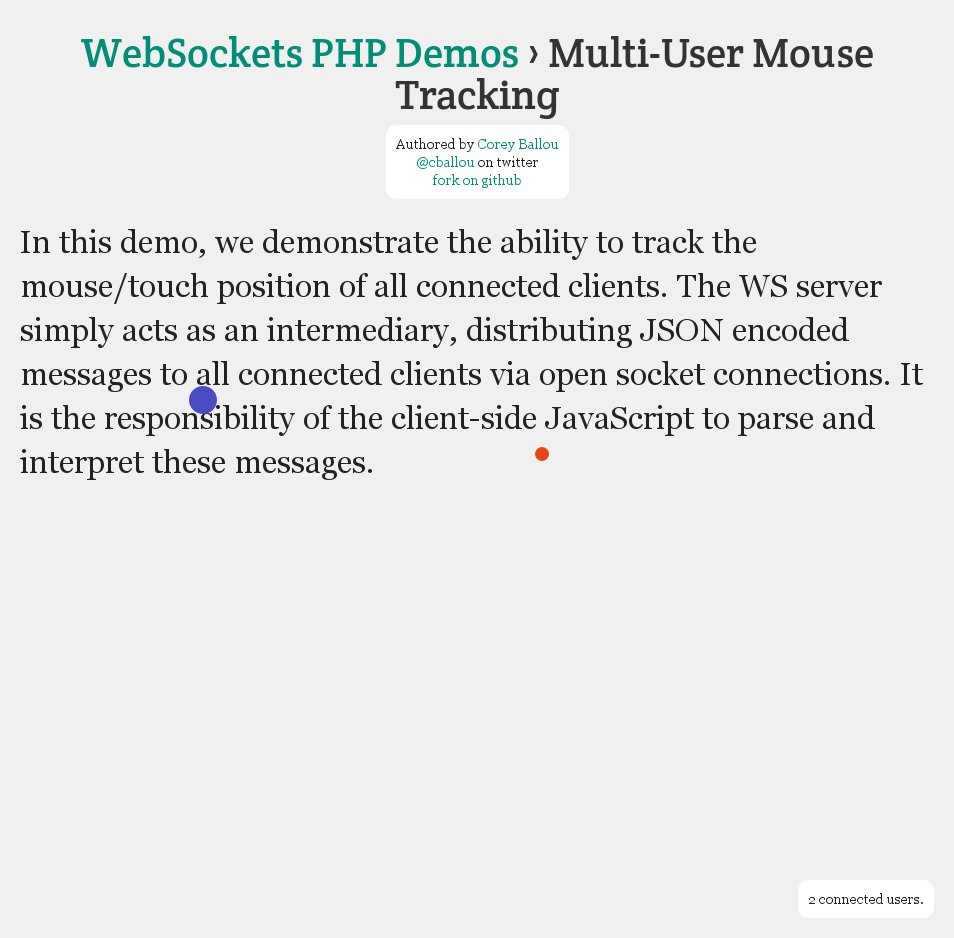
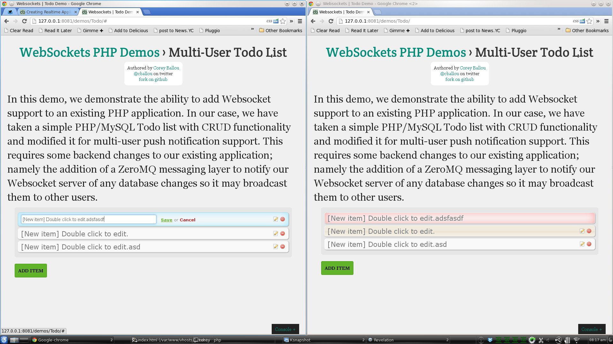

Creating Realtime Applications with PHP and Websockets
SO... WHAT ARE WEBSOCKETS?
- Full-duplex client/server communication over TCP
- Hackery piggybacking on HTTP handshake
- RFC6455, an official protocol!

OK... BUT WHY USE WEBSOCKETS?
- Optimized for low latency applications
- Cross-origin communication
- No more AJAX polling
- Because it's flashy
LET'S TALK HTTP OVERHEAD
Request

Response

LET'S TALK PERFORMANCE
Let's compare AJAX polling vs. WebSockets using the previous header example.
and assume AJAX polling every second vs. receiving a WebSocket message every second.
| Clients | HTTP Throughput | WS Throughput | Difference |
| 1,000 | 1.56 MB | 0.002 MB | 780x |
| 10,000 | 15.26 MB | 0.019 MB | 803x |
| 100,000 | 152.59 MB | 0.191 MB | 799x |
THE WEBSOCKET HTTP HANDSHAKE
Client Request
GET /endpoint HTTP/1.1
Origin: http://example.com
Host: server.example.com
Upgrade: WebSocket
Connection: Upgrade
Sec-WebSocket-Key: dGhlIHNhbXBsZSBub25jZQ==
Sec-WebSocket-Version: 13
[...]Server Response
HTTP/1.1 101 Switching Protocols
Upgrade: WebSocket
Connection: Upgrade
Sec-WebSocket-Accept: s3pPLMBiTxaQ9kYGzzhZRbK+xOo=
[...]Only incur HTTP header overhead on the initial handshake.
WEBSOCKETS PROTOCOL HISTORY. BORING!
TLDR; It's mostly security enhancements.
Pro tip: you can check RFC diffs on the IETF site
Hixie-75 v Hixie-76 · Hixie-75 v Hybi-00 · Hixie-75 v Hybi-07 · Hixie-75 v Hybi-10 · Hixie-75 v RFC6455 · Hixie-76 v Hybi-00 · Hixie-76 v Hybi-07 · Hixie-76 v Hybi-10 · Hixie-76 v RFC6455 · Hybi-00 v Hybi-07 · Hybi-00 v Hybi-10 · Hybi-00 v RFC6455 · Hybi-07 v Hybi-10 · Hybi-07 v RFC6455 · Hybi-10 v RFC6455
BROWSER SUPPORT: STILL SHODDY
Because we all have to deal with backwards compatibility...
CLIENT SIDE: HTML5 JS API
var socket = new WebSocket('ws://localhost:8000/socketServer.php');
socket.onopen = function() {
console.log('Socket status: ' + socket.readyState);
// send message to socket server
socket.send('Hello, world!');
// close connection
socket.close();
};
socket.onmessage = function(msg) { console.log(msg.data); };
socket.onclose = function() { };
socket.onerror = function() { };SERVER SIDE: RATCHET'S OUR BREAD AND BUTTER
Ratchet is a loosely coupled PHP library providing developers with tools to create real time, bi-directional applications between clients and servers over WebSockets.
use Ratchet\MessageComponentInterface;
use Ratchet\ConnectionInterface;
use Ratchet\Server\IoServer;
use Ratchet\WebSocket\WsServer;
class MyWsServer implements MessageComponentInterface {
public function onOpen(ConnectionInterface $conn) { }
public function onMessage(ConnectionInterface $conn, $msg) { }
public function onClose(ConnectionInterface $conn) { }
public function onError(ConnectionInterface $conn, \Exception $e) { }
}
$server = IoServer::factory(new WsServer(new MyWsServer()), 8090);
$server->run();RATCHET SUPPORTS THE WAMP SUB-PROTOCOL
use Ratchet\ConnectionInterface;
use Ratchet\Wamp\WampServerInterface;
class Demo implements WampServerInterface {
public function onSubscribe(ConnectionInterface $conn, $topic) { }
public function onUnSubscribe(ConnectionInterface $conn, $topic) { }
public function onOpen(ConnectionInterface $conn) { }
public function onClose(ConnectionInterface $conn)
public function onCall(ConnectionInterface $conn, $id, $topic, array $params) { }
public function onPublish(ConnectionInterface $conn, $topic, $event, array $exclude, array $eligible) { }
public function onError(ConnectionInterface $conn, \Exception $e) { }
public function onMessage($entry) { }
}DEMO TIME: SITE VISITOR LOGGING
DEMO TIME: MOUSE TRACKING
DEMO TIME: TODO LIST
WEBSOCKETS USE CASES
- Analytics and dashboards
- Play-by-play sports
- Stock trading
- News tickers
- Chat
- Multiplayer gaming
- Social streams
- User collaboration
- Instant feedback autocompletion
- YOUR IMAGINATION
WEBSOCKETS AND WAMP
Probably not the WAMP you're thinking of

- WAMP is a sub-protocol of WebSockets
- WAMP is async RPC
- WAMP is async PubSub
AUTOBAHN.JS: A JS CLIENT LIBRARY SUPPORTING WAMP
RPC
window.onload = function() {
var ws = ab.connect(
"ws://localhost:9000",
connected,
disconnected
);
function connected(session) {
var arg1 = 'hello',
arg2 = 'world';
session.call('topic', arg1, arg2).then(
callback_success_func,
callback_error_func
);
}
function disconnect(code, reason) {
console.log(reason);
}
function callback_success_func(res) {
console.log(res);
}
function callback_error_func(error, desc) {
console.log(desc);
}
};PubSub
window.onload = function() {
var ws = ab.connect(
"ws://localhost:9000",
connected,
disconnected
);
function connected(session) {
session.subscribe('topic', callback_func);
session.publish('myTopic', { id: 27, ts: new Date().getTime() });
}
function disconnect(code, reason) {
console.log(reason);
}
function callback_func(topic, event) {
console.log('got event: ' + event);
}
};CLIENT SIDE WEBSOCKET FRAMEWORKS
So you can be under way with minimal overhead.
- Native HTML5 Support if you don't need fallbacks.
- Autobahn.js provides WAMP support.
- Portal
- Socket.IO crudely supported by Elephant.IO
- Atmosphere.js supports JS/Java/Groovy, sorry PHP :(
OTHER SERVER SIDE FRAMEWORKS
- Wrench formerly php-websocket.
- Elephant.IO for Socket.IO support in PHP.
COOL DEMOS
Because copying is the sincerest form of flattery.